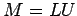
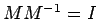
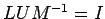
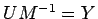

Next: Processing big meshes Up: Problems and solving examples Previous: Compression and decompression of Contents
Matrix inversion is used in many applications ie. as a direct method for solving linear equations. For challenging applications (like astronomical simulation, crash test simulation, global climate modelling and many others) the memory is always insufficient in size. Scientist usually want to increase accuracy which causes bigger and bigger matrices. Thus, out-of-core algorithm for inverting matrices might be very useful.
Inversion of a matrix can be computed from its LU factorization. LU factorization produces matrices: L (lower triangular) and U (upper triangular) such that:

In general when LU decomposition uses partial pivoting there may be third matrix P, which stores the permutation matrix.
We're searching for a matrix such that:



Firstly we compute matrix Y such that , this can be done using backward substitution. Another backward substitution is used to compute from
As proved in [7] out-of-core inverting of a matrix can be efficiently done using blocked decomposition of matrices. It presents algorithms for both parallel out-of-core LU factorization (which is also presented in [8]) and parallel out-of-core triangular substitution.
| size | grid | LU fact | io | communication | computation | total |
| 12288 | 1x8 | 29m39s | 10m16s | 11m19s | 21m21s | 1h36m |
| 2x4 | 21m17s | 9m39s | 4m31s | 20m27s | 1h12m | |
| 4x2 | 18m50s | 8m52s | 4m30s | 19m50s | 1h08m | |
| 8x1 | 19m57s | 8m09s | 9m17s | 19m50s | 1h21m | |
| 20480 | 1x8 | 2h37m | 1h07m | 1h27m | 2h34m | 10h38m |
| 2x4 | 1h06m | 1h02m | 31m55s | 2h05m | 6h23m | |
| 4x2 | 1h50m | 1h02m | 17m48s | 1h56m | 6h21m | |
| 8x1 | 1h43m | 55m46s | 27m26s | 1h49m | 6h25m | |
| 27648 | 1x8 | 7h59m | 2h07m | 6h16m | 4h04m | 1d04h |
| 2x4 | 4h34m | 1h59m | 2h10m | 3h51m | 16h45m | |
| 4x2 | 3h20m | 2h02m | 49m31s | 3h47m | 12h43m | |
| 8x1 | 3h02m | 2h04m | 53m28s | 3h46m | 12h29m | |
These results were obtained on a cluster of 8 PC-Celeron running Linux (each one has 96MB of psychical memory) and interconnected by a Ethernet switch, Of course there is a way to avoid I/O overhead in this algorithm, it can be done by overlapping I/O with the computation, which is further described in [7]